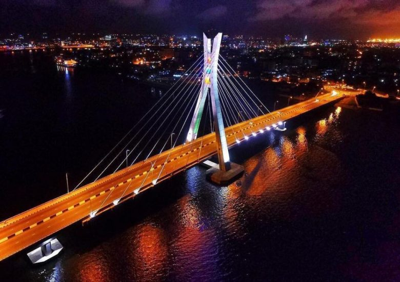

Lagos is my favorite city because it is the largest city in Nigeria and one of the busiest cities in Africa. It is known for its vibrant economy, diverse culture, and exciting lifestyle.
Lagos is home to beautiful beaches, modern shopping malls, delicious local cuisine, and many tourist attractions. It is also a center for business, technology, entertainment, and education, making it a city full of opportunities.
